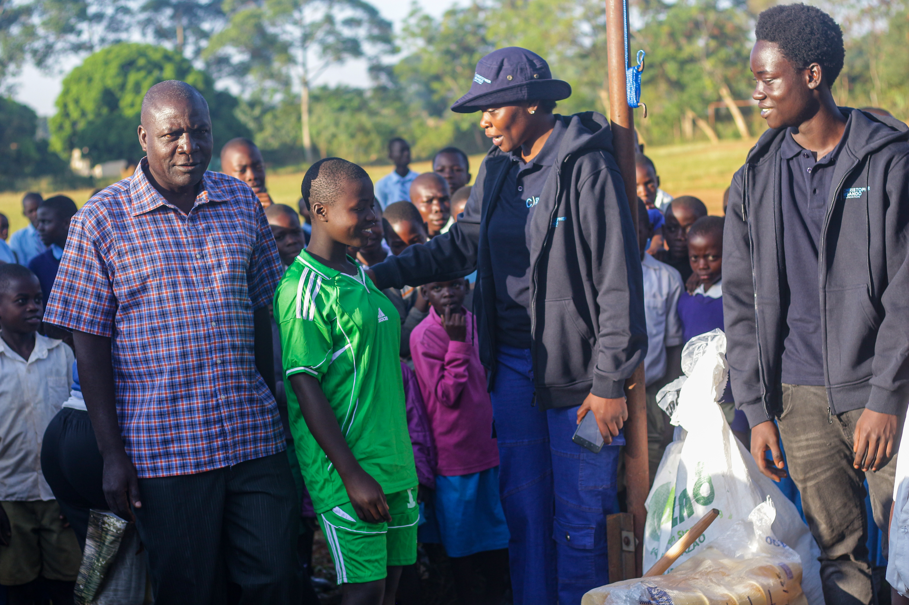

Transformational Technology
The Christopher Msando Foundation provides exposure and skills in technology to youth and children with little to no access — growing their talents, nurturing their character and improving their quality of life.

